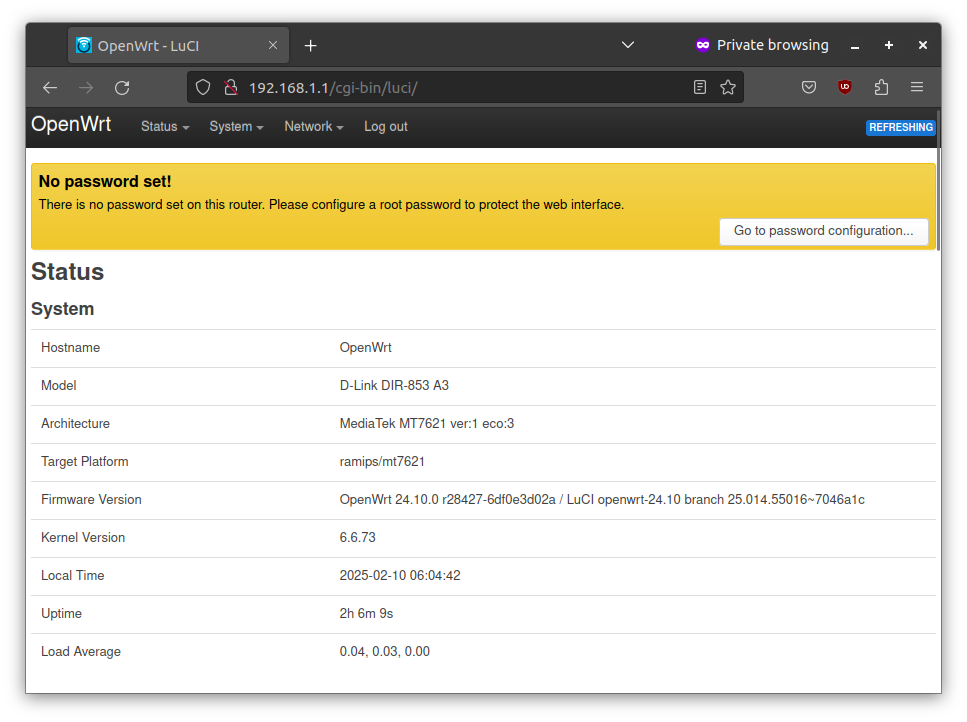
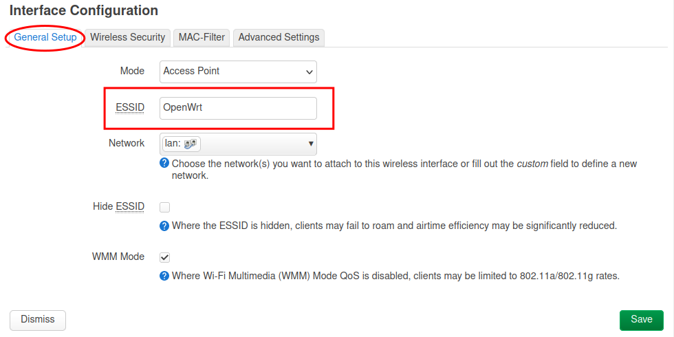
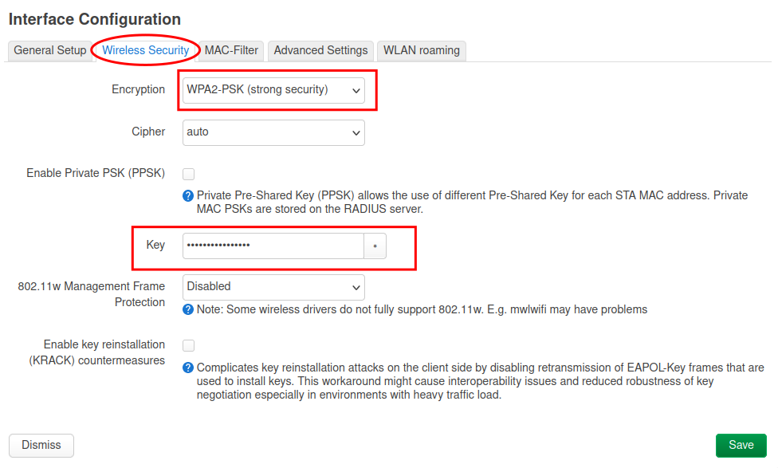
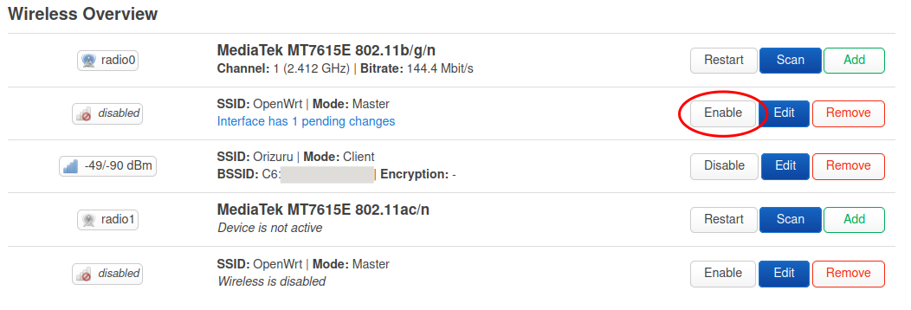

Wireless Networking Setup for Farmhill Learning
This is the documentation for the wireless networking setup at Farmhill Learning Community.
The wireless network is setup using a router running OpenWrt, an open-source operating system for wireless routers based on linux.
Apart for providing wireless network, this setup also provides additional services like hosting static websites and services to sync content from various devices in the local network.
The Router
The current setup uses D-Link DIR-853 A3 wireless router.
The Specs
-
Model: DIR-853
-
H/W Ver: A3
-
CPU: MIPS 1004Kc V2.15 880MHz (2 cores, 4 threads)
-
RAM: 256 MB
-
Disk: 24 MB
This device has resonably good compute and memory, but not enough disk space to install many external software. Using external USD disk will address that issue.
Setting up the Router
To setup the router, we need to the following tasks.
- Install the OpenWRT firmware
- Connect to the router from a laptop
- Secure the device
- Connect to an existing wifi network
- Enable wifi access points
Installing OpenWRT Firmware
Please note that this needs to be done only once. The router may have this firmware already installed.
The OpenWRT Firmware can be downloaded using the firmware-selector of openwrt. You need to download the factory image.
The Latest version as of Feb 2025 is linked below.
OpenWrt firmware version 24.10 for model D-Link DIR-853 A3.
Every router will have a way to update firmware. It is available from the admin interface of the router, typically in the System tab/menu and it will be labelled as Backup / update firmware.
Once you select the factory image and upload, the led lights on router will flash repeated indicating that it is resetting and after a minute or so, the router will be ready with openwrt.
Connecting to the Router
Connect your laptop to the router using ethernet cable to configure it.
You can configure the router by connecting it to a laptop via ethernet. Connect the laptop ethernet port to one of the LAN ports (one of the yellow ports).
Network Setup
After connecting, setup the laptop with manual IP address with the following settings.
IP Address: 192.168.1.2
Subnet mark: 255.255.255.0
Gateway: 192.168.1.1
Ping Test
After the settings are done, you can verify if you can reach the router by running the ping command
from terminal/command promt.
$ ping 192.168.1.1
PING 192.168.1.1 (192.168.1.1) 56(84) bytes of data.
64 bytes from 192.168.1.1: icmp_seq=1 ttl=64 time=0.675 ms
64 bytes from 192.168.1.1: icmp_seq=2 ttl=64 time=0.680 ms
64 bytes from 192.168.1.1: icmp_seq=3 ttl=64 time=0.682 ms
^C
--- 192.168.1.1 ping statistics ---
3 packets transmitted, 3 received, 0% packet loss, time 2029ms
rtt min/avg/max/mdev = 0.675/0.679/0.682/0.003 ms
The Router Admin Interface
Open your browser and visit http://192.168.1.1/ or http://openwrt.lan.

It will ask you to login. Press Log in without entering any password.
You'll be see the status page of the router.

Congratulations! You have sucessfully connected to the router. The next step is to secure the device.
Securing the Device
Set a password to secure the router from unauthrized access.
When you go to the router web interface, it was a "No password set!" warning at the top of the page.
Click on Go to password configuration and set a password.

Connecting to client Wi-Fi network
Configure the router to connect to an existing wifi network to reach the internet.
Step 1: Go to Wireless Overview page
Go to Network > Wireless page in the router
admin interface.
Click on the Scan button of radio0. The radio0 is the 2.4 GHz network and the radio1 is the 5 GHz network. Use radio1 instead of radio0 if you would like to connect to a 5 GHznetwork.
Step 2: Wireles Scan
You'll see the Wireless Scan dialog. Select the network that you want to join.
Step 3: Join Network
You'll be prompted with the Joining Network dialog.
Please enter the wifi password in the WPA passphase field and Submit.
Click Save on the next dialog.
Step 4: Save & Apply
You'll be back to the Wireless Overview page. Click on Save and Apply at the bottom of the page.
The router will apply the changes and restart. And you'll see an entry in the Associated Stations section.

Step 5: Verify
You should be able to connect to internet from your laptop. Verify by opening any website from your browser or by running ping google.com from terminal.
The router is connected to internet and can be used with an ethernet connection, but the wifi access point is not enabled yet. We'll configure that in the next step.
Enable Wifi Access Point
Enable wifi access points in the router so that devices in the visinity (laptops and mobile phones) can connect to the router.
The router has two accesspoints one each for 2.4 GHz and 5 GHz band. The 2.4 GHz band has lower bandwidth, but spans longer distances. The 5 GHz band on the other hand has high bandwidth, but covers only a short distance.
Configure 2.4 GHz Access Point
Click on the Edit button of the first access point (second row).

Set the access point name.

Go to the Wireless Security tab, select WPA2-PSK (strong security) as Encryption and set a password in the Key field.

Click on the Save button.
Once you are back on the wireless overview page, click on the Enable button for the access point.

The 2.GHz access point is now live.
Configure 5 GHz Access Point
Click on the Edit button of the second access point (last row).
Repeat the same steps as in the previous step.
Don't forget to enable to access point at the end.
You can select the same name for both the access points if you want the connecting device to automatically select best of these network, or you can have separate names.
The possible names would be Farmhill Wifi and Farmhill Wifi 5G for 2.4 and 5 GHz respectively.
Verify
Now both the access points are live. You can verify them by connecting to wifi from a laptop or a mobile phone.
Configuring the Disk
The router has very limited amount of disk space and it is not sufficient to install additional software. The recommended way to address this limitation is using storage device to expand the root file system.
It is a slightly tricky setup, documented in the Extroot configuration page of the openWrt documentation. It is done in a way that even if we remove the disk, the router can function with the mininal settings, without the additional software.
This page is adopted from the Extroot confguration page with a some changes to how the partitioning is done.
Partitioning and Formatting the Disk
Using the Disk application in Ubuntu partition the disk.
Create an ext4 partition with the all the available space after leaving about one GB for swap. Label it as extroot.
Create a swap patition with the remaining space.
It is convenient to have the ext4 partition at the beginning. That will be make the device name /dev/sda1.
Preparation
Install the required software to mount the ext4 file system.
Login to the router using the following command and use the password that you have set for the router in the web interface to login.
ssh root@192.168.1.1
After logging in, run the following commands:
opkg update
opkg install block-mount kmod-fs-ext4 e2fsprogs kmod-usb-storage
Verifying
Plugin in the USB disk and run the command block info.
root@OpenWrt:~# block info
/dev/ubiblock0_0: UUID="aa0c38ed-3ed673d5-2a4fc139-3b18b48e" VERSION="4.0" MOUNT="/rom" TYPE="squashfs"
/dev/ubi0_1: UUID="639fb202-a764-4870-9a2a-73fe4309afbc" VERSION="w5r0" MOUNT="/overlay" TYPE="ubifs"
/dev/sda1: UUID="2565696e-9585-4fd4-a442-b6510b1d4fc9" LABEL="extroot" VERSION="1.0" TYPE="ext4"
/dev/sda2: UUID="dd37cee8-2310-43d1-95c9-511d06e0b67c" LABEL="swap" VERSION="1" TYPE="swap"
You should see an output like this. The LABEL for the partition /dev/sda1 shoud be extroot and the type of the partition /dev/sda2 should be swap.
Configuring extroot
Configure the extroot mount entry.
DEVICE=/dev/sda1
eval $(block info ${DEVICE} | grep -o -e 'UUID="\S*"')
eval $(block info | grep -o -e 'MOUNT="\S*/overlay"')
uci -q delete fstab.extroot
uci set fstab.extroot="mount"
uci set fstab.extroot.uuid="${UUID}"
uci set fstab.extroot.target="${MOUNT}"
uci commit fstab
Configuring the rootfs_data /ubifs
Configure a mount entry for the the original overlay.
ORIG="$(block info | sed -n -e '/MOUNT="\S*\/overlay"/s/:\s.*$//p')"
uci -q delete fstab.rwm
uci set fstab.rwm="mount"
uci set fstab.rwm.device="${ORIG}"
uci set fstab.rwm.target="/rwm"
uci commit fstab
This will allow you to access the rootfs_data / ubifs partition and customize the extroot configuration /rwm/upper/etc/config/fstab.
Transferring Data
Transfer the content of the current overlay to the external drive.
mount ${DEVICE} /mnt
tar -C ${MOUNT} -cvf - . | tar -C /mnt -xf -
Enable Swap
Enable the swap partition.
SWAP_DEVICE=/dev/sda2
eval $(block info ${SWAP_DEVICE} | grep -o -e 'UUID="\S*"')
uci -q delete fstab.swap
uci set fstab.swap="swap"
uci set fstab.swap.uuid="${UUID}"
uci commit fstab
Apply changes
Reboot the device to apply the changes.
reboot
Testing
Run the following commands to verify if the things are alright.
Ensure the the /dev/sda1 is mounted as overlay.
root@OpenWrt:~# mount | grep overlay
/dev/sda1 on /overlay type ext4 (rw,relatime)
overlayfs:/overlay on / type overlay (rw,noatime,lowerdir=/,upperdir=/overlay/upper,workdir=/overlay/work,uuid=on)
Ensure the the disk space is correct.
root@OpenWrt:~# df -h | grep overlay
/dev/sda1 13.2G 4.8M 12.5G 0% /overlay
overlayfs:/overlay 13.2G 4.8M 12.5G 0% /
Ensure swap is on.
root@OpenWrt:~# swapon -s
Filename Type Size Used Priority
/dev/sda2 partition 1301500 0 -2
And it is visible in the output of free command.
root@OpenWrt:~# free
total used free shared buff/cache available
Mem: 249100 50388 166180 288 32532 157728
Swap: 1301500 0 1301500
The USB disk is now ready to be used.